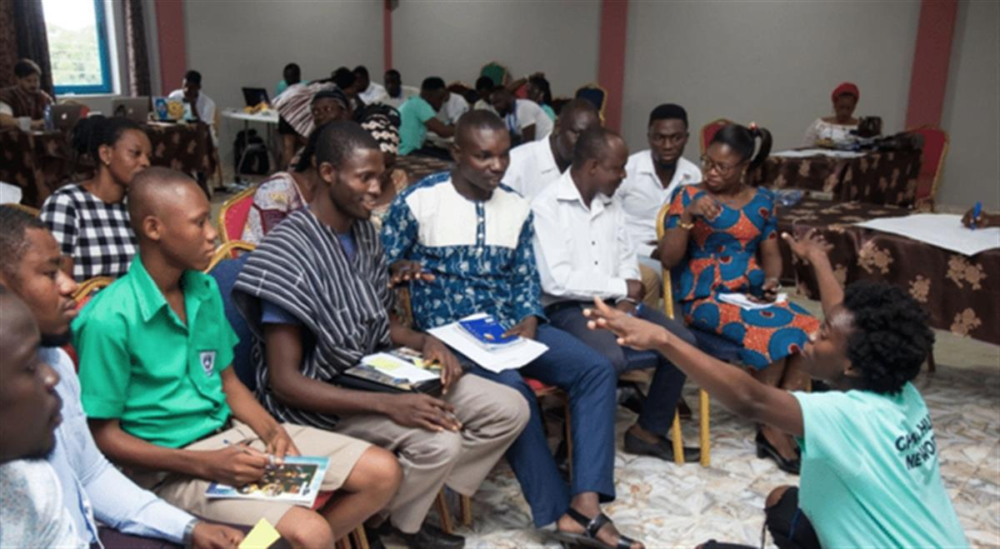
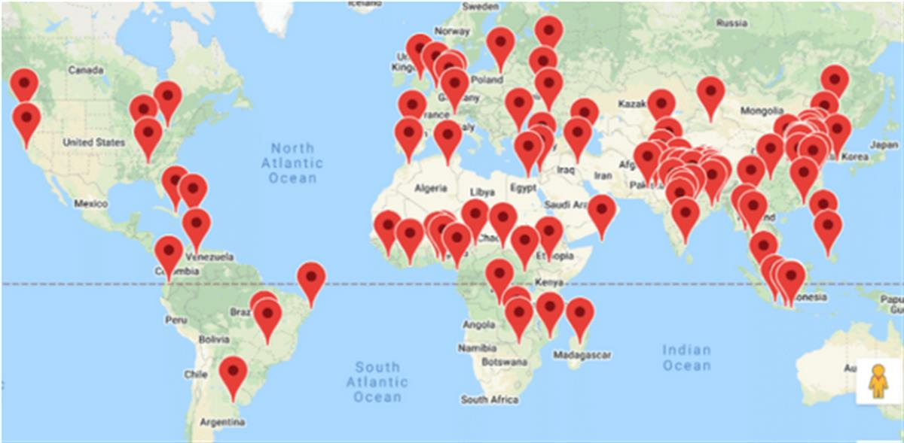
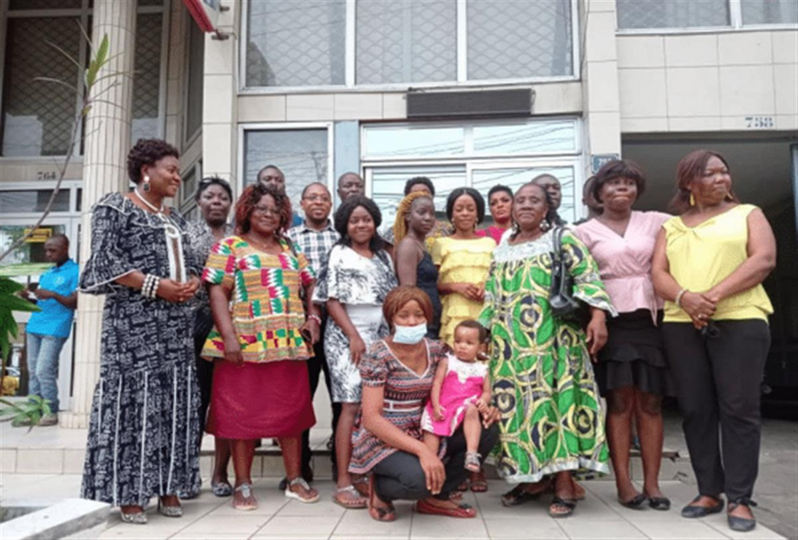

Photo by Yannis H on Unsplash
Global project (Worldwide)
What if you could join a global governance body built on fairness and empathy and informed by scientists and Indigenous knowledge keepers?
When Susan Nakyung Lee, fresh out of high school, heard of the plan for a global citizen assembly, she was surprised. Surely, she thought, this existed already. A few Google searches later, she realised that what seemed to her like common sense hadn’t been put into practice yet. That’s when Global Assembly (GA), ‘the first global citizens’ assembly that anyone on earth can join’ was born.
The theory is as simple as it sounds — if you’re setting a global agenda that affects everyone, then everyone should have a seat at the table. The practice, not so much: how do you get people from all corners of the world to understand our biggest challenges, listen to each other, and work together to solve them?
The recipe for success, it turns out, includes an algorithm, experts and translators, and a generous amount of human empathy and imagination. A pinch of luck with your internet connection also helps.

Photo: Eugene AffulThroughout 2021, GA put together the Core Assembly, a group of 100 people from around the world, to answer one question: how can humanity address the climate and ecological crisis in a fair and effective way? After learning, debating, and overcoming space, time, and power cuts together, the members presented their views to the policymakers who were calling the shots at COP26. As to say, a declaration on the future of Planet Earth signed by the humans who inhabit it.
Presenting the declaration in Glasgow’s Green Zone, just across the river from government leaders, Susan said:
“Today’s a historic day. Today we hear what the voice of humanity has to say about the climate and ecological crisis for the first time. Today’s the day we begin to plug in the missing puzzle pieces of how we make decisions at the global level.”
The Core Assembly is as diverse as humanity is. An algorithm randomly selected 100 points across the globe using a NASA database of human population density. The result of this global lottery system is “a snapshot of what the human family looks like” in terms of age, gender, geography, economic background and yes, attitude towards climate change. If this sounds fairer than 500 fossil fuel lobbyists at a climate summit, it’s because it is.
The assembly speaks more than 30 languages and relies on community translators to communicate. Half of its members identify as female. If 47% of the participants spent between 7 and 12 years in education, 35% describe themselves as not fully literate. They live anywhere from Argentina to Zambia and most of them earn less than $10 a day. It’s as ‘everyday people’ as it gets.

Where are the lottery winners?Of course, not all everyday people are climate experts. That’s why scientists and Indigenous knowledge keepers from the GA’s Knowledge and Wisdom Committee, led by former IPCC and IPBES chair Robert Watson, steer the creation of the learning material used by the assembly. Members learn about the climate crisis from the people at its forefront and those who dedicated their lives to studying it. The best part? The learning material can be downloaded by “anyone on earth.”
Because the Core Assembly is only a part of the movement. To really ‘give everyone a seat at the table’, GA is turbo boosting locally-run community assemblies organised by people like you and me all over the world, providing the learning material and a community assembly toolkit. Local deliberations will feed back into the global processes. 50 countries have joined so far.
Should we swap our government systems for an algorithm, then?
“The climate crisis is really a governance crisis,” GA told the Atlas. If we haven’t made enough progress in tackling the climate emergency, it’s because our government systems aren’t built for the challenge, nor to focus on making the planet equally livable for all earthlings. It’s no surprise that article 2 of the GA’s declaration for COP26 speaks of ‘equity and global justice.’ GA says:
“Climate justice first starts with creating a system where the most affected voices are heard, everyday people are valued as equal partners in decisions moving forward and we have a system that works for everyone.”
The GA people power champions showed that often, citizens are ahead of politicians. As you read this, assemblies all over the world are drafting policies that are far more ambitious than anything that could have possibly come out of COP26.
Yet Global Assembly isn’t about replacing government systems. In recognising that we need bolder, more urgent policies and getting people (ALL of the people) to help write them, the global loudhailers are about moving faster and moving together. Reaching where our systems aren’t programmed to go and fast-tracking the human family into the next century, one that’s fairer and more sustainable for everyone. We say sign us up.
As GA’s Richard Wilson said at COP:
“We’re grateful for support from the political world. But the moment we depend on politicians for our agency, we deny the power that each one of us holds.”
This is just the beginning for GA. Both the core and community assemblies will continue their deliberative democracy processes to publish their findings on COP26 and just climate action in March 2022. After that, they’ll be co-designing their next steps. The final goal? Having “over 10 million people participate annually and become a permanent infrastructure of our global governance.”

Community assembly in Douala, Cameroon
AtlasAction: Join or start a community assembly near you and subscribe to the GA newsletter to hear from your fellow earthlings. Artist? Get in touch to find creative ways to rethink global participation. Follow GA on social media: Twitter, Instagram and Facebook.
🎟️AtlasEvent: Susan will join Fixing the Future Festival 2021 ► Grab your tickets.
Editor’s note: This is a global project with no fixed headquarters. However, we want readers to be able to find Global Assembly on our map. After consulting with GA, we mapped it in Yemen’s Socotra Island, one of the Core Assembly’s most remote locations. The Socotra team members face extraordinary challenges yet continue working to make Yemeni voices heard in the Core Assembly.
Written by
Bianca Fiore, Editor, Atlas of the Future (24 November 2021)
Project leader
GA Core Delivery Team
SOURCE: ATLAS OF THE FUTURE